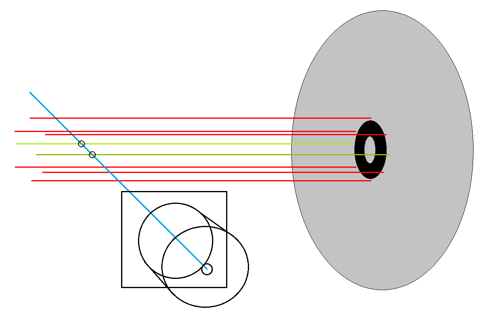

.
ZWIERCIADŁA GŁÓWNEGO TELESKOPU ASTRONOMICZNEGO
.
Jak wyznaczyć położenie osi optycznej zwierciadła głównego
05-11-2020
|
Do dnia opublikowania niniejszego opracowania, nie słyszałem, aby ktoś próbował działać w podobny sposób, mając powyższe na względzie, uważam się za autora poniższej techniki. :) Wstęp . Gdy kolimacja teleskopu dokonana za pomocą Autokolimatora z użyciem umieszczonego centralnie znacznika nie daje prawidłowych wyników w teście na gwiazdach, pozostaje poszukać takiej lokalizacji znacznika na zwierciadle głównym, przy której po wykonaniu kolimacji Autokolimatorem gwiazdy w całym kadrze będą prawidłowe. Wszyscy wiedzą doskonale, że punktem wyjściowym dobrej kolimacji, jest perfekcyjne przyklejenie (idealnie na środku), znacznika na zwierciadle głównym teleskopu, natomiast już mało kto wie, że w ten sposób, oznaczamy jedynie środek geometryczny zwierciadła głównego, a on wcale nie musi się pokrywać z miejscem, z którego wychodzi oś optyczna paraboli zwierciadła. Czy to w fabryce, czy tym bardziej u wykonującego zwierciadła ręcznie rzemieślnika, ani ogniskowa nie wynosi deklarowanych mm, ani po parabolizacji (bo gdy zwierciadło jest sferyczne, to nie ma znaczenia) nikt nie trafi, co do milimetra, z umiejscowieniem osi optycznej zwierciadła w punkt na jego środku geometrycznym. Po co więc, w takim razie, ta cała zabawa z przyklejaniem znacznika mega idealnie na środku zwierciadła głównego? A no po to, gdyż domyślnie, tam właśnie, znajduje się oś obrotu paraboli, a przecież, skoro nie potrafimy wyznaczyć rzeczywistego miejsca jej umiejscowienia, to przyklejanie znacznika niecentralnie losowo, jest już zupełnie pozbawione sensu. Pytanie więc brzmi, jak ustalić gdzie faktycznie wychodzi oś optyczna z naszego zwierciadła głównego? Nie ma na to prostej metody, ale postanowiłem spróbować znaleźć na to jakiś sposób. Ale ... zacząć należy najpierw od TEGO oraz TEGO, potem dopiero jest sens wdrażać poniższe opracowanie. Kolimacja teleskopu systemu Newtona to złożony proces i wymaga wykonania w odpowiedniej kolejności wielu niezależnych (od siebie zależnych) czynności. Opis danego zagadnienia zakłada, że beneficjent jego jest ich świadom, gdyż nie istnieje możliwość w każdym przypadku przywoływać szczegółowo pozostałych wątków pobocznych. OPIS . Znacznik rotacji - Zwierciadło główne będziemy obracać w celi i aby zapewnić sobie kontrolę nad jego pozycją musimy mieć jakiś punkt odniesienia, w tym celu, wybieramy dowolne miejsce na obwodzie zwierciadła i oznaczamy je jakimś znacznikiem. Malujemy kreskę lub naklejamy naklejkę, byle nie na powłoce odblaskowej zwierciadła. . Ruchomy marker Autokolimatora - Aby przystąpić do opisanych poniżej czynności, musimy sporządzić ruchomy trójkątny znacznik autokolimatora (najlepiej z czerwonego kartonika). Nie będzie to naklejka, ponieważ znacznik będzie swobodnie kładziony na leżącym poziomo zwierciadle głównym, dając nam możliwość swobodnego przemieszczania go zgodnie z zapotrzebowaniem. . Ciekawostka :) Najlepszym narzędziem do bezpiecznego przemieszczania znacznika po zwierciadle głównym jest gumowa gruszka, przy odrobinie wprawy, odpowiednimi podmuchami staniemy się wirtuozami pozycjonowania znacznika bez ryzyka uszkodzenia powłoki odblaskowej. Teraz możemy brać się do roboty. Oczywiście pamiętamy o zagadnieniu symetrycznej obstrukcji centralnej ! Badanie 0 - Zwierciadło główne umieszczamy w celi w pozycji znacznikiem rotacji do góry, następnie, idealnie na środku, na zwierciadle głównym, na znaczniku kołowym, umieszczamy znacznik Autokolimatora i kolimujemy teleskop zgodnie z procedurą Autokolimacji. Uruchamiamy sesję astrofotograficzną w okolicach zenitu, aby luźno położony trójkątny znacznik nie zjechał po zwierciadle i pobieramy próbki gwiazd z centrum i rogów kadru. Graficznie . Jeśli mamy szczęście i gwiazdy rozchodzą się równomiernie od centrum kadru, posiadamy oś optyczną idealnie na środku geometrycznym zwierciadła głównego, wtedy reszta zabiegów opisanych poniżej jest zbędna, jeśli jednak gwiazdy nie rozchodzą się równomiernie, próbujemy dalej. Teraz znacznik Autokolimatora będziemy umieszczać niecentralnie dla sprawdzenia innych miejsc. Co ważne, kolimacja na przestawiony znacznik musi odbywać się w taki sposób, aby został spełniony warunek przecinania się osi optycznej wyciągu okularowego (niebieska linia) i osi optycznej zwierciadła głównego (patrz grafiki poniżej). Ten warunek, spełniają nam jedynie dwie pozycje (zielone linie), czyli linia znajdująca się bliżej osi wyciągu (na prawo od środka, patrząc do wlotu tuby, z wyciągiem okularowym po prawej), oraz linia położona dalej od osi wyciągu (na lewo od środka, patrząc do wlotu tuby, z wyciągiem okularowym po prawej). Lokalizacje ulokowane nad i pod osią wyciągu (czerwone linie) odpadają, gdyż nie spełniają przywołanego wymogu. Należy więc zdecydować, czy lepiej pracować na bliższym, czy dalszym położeniu. Ja wybrałem lokalizację, która jest położona dalej, czyli jasnozieloną. Widok z perspektywy. .  Widok z przodu tuby teleskopu. . Dalej... . Badanie 1 - Zwierciadło główne umieszczamy w celi w pozycji znacznikiem rotacji do góry a ruchomy znacznik Autokolimatora umieszczamy 4mm na lewo od środka geometrycznego zwierciadła głównego. Kolimujemy teleskop zgodnie z procedurą Autokolimacji. Uruchamiamy sesję astrofotograficzną w okolicach zenitu, aby luźno położony trójkątny znacznik nie zjechał po zwierciadle i pobieramy próbki gwiazd z centrum i rogów kadru. . Badanie 2 - Zwierciadło główne umieszczamy w celi w pozycji znacznikiem rotacji w prawo a ruchomy znacznik Autokolimatora umieszczamy 4mm na lewo od środka geometrycznego zwierciadła głównego. Kolimujemy teleskop zgodnie z procedurą Autokolimacji. Uruchamiamy sesję astrofotograficzną w okolicach zenitu, aby luźno położony trójkątny znacznik nie zjechał po zwierciadle i pobieramy próbki gwiazd z centrum i rogów kadru. . Badanie 3 - Zwierciadło główne umieszczamy w celi w pozycji znacznikiem rotacji w dół a ruchomy znacznik Autokolimatora umieszczamy 4mm na lewo od środka geometrycznego zwierciadła głównego. Kolimujemy teleskop zgodnie z procedurą Autokolimacji. Uruchamiamy sesję astrofotograficzną w okolicach zenitu, aby luźno położony trójkątny znacznik nie zjechał po zwierciadle i pobieramy próbki gwiazd z centrum i rogów kadru. . Badanie 4 - Zwierciadło główne umieszczamy w celi w pozycji znacznikiem rotacji w lewo a ruchomy znacznik Autokolimatora umieszczamy 4mm na lewo od środka geometrycznego zwierciadła głównego. Kolimujemy teleskop zgodnie z procedurą Autokolimacji. Uruchamiamy sesję astrofotograficzną w okolicach zenitu, aby luźno położony trójkątny znacznik nie zjechał po zwierciadle i pobieramy próbki gwiazd z centrum i rogów kadru. . A może szerzej? . Badanie 5 - Zwierciadło główne umieszczamy w celi w pozycji znacznikiem rotacji do góry a ruchomy znacznik Autokolimatora umieszczamy 8mm na lewo od środka geometrycznego zwierciadła głównego. Kolimujemy teleskop zgodnie z procedurą Autokolimacji. Uruchamiamy sesję astrofotograficzną w okolicach zenitu, aby luźno położony trójkątny znacznik nie zjechał po zwierciadle i pobieramy próbki gwiazd z centrum i rogów kadru. . Badanie 6 - Zwierciadło główne umieszczamy w celi w pozycji znacznikiem rotacji w prawo a ruchomy znacznik Autokolimatoram umieszczamy 8mm na lewo od środka geometrycznego zwierciadła głównego. Kolimujemy teleskop zgodnie z procedurą Autokolimacji. Uruchamiamy sesję astrofotograficzną w okolicach zenitu, aby luźno położony trójkątny znacznik nie zjechał po zwierciadle i pobieramy próbki gwiazd z centrum i rogów kadru. . Badanie 7 - Zwierciadło główne umieszczamy w celi w pozycji znacznikiem rotacji w dół a ruchomy znacznik Autokolimatora umieszczamy 8mm na lewo od środka geometrycznego zwierciadła głównego. Kolimujemy teleskop zgodnie z procedurą Autokolimacji. Uruchamiamy sesję astrofotograficzną w okolicach zenitu, aby luźno położony trójkątny znacznik nie zjechał po zwierciadle i pobieramy próbki gwiazd z centrum i rogów kadru. . Badanie 8 - Zwierciadło główne umieszczamy w celi w pozycji znacznikiem rotacji w lewo a ruchomy znacznik Autokolimatora umieszczamy 8mm a lewo od środka geometrycznego zwierciadła głównego. Kolimujemy teleskop zgodnie z procedurą Autokolimacji. Uruchamiamy sesję astrofotograficzną w okolicach zenitu, aby luźno położony trójkątny znacznik nie zjechał po zwierciadle i pobieramy próbki gwiazd z centrum i rogów kadru. . Oczywiście, gdy ktoś ma ochotę, badań może wykonać więcej, zwierciadło obracać co 45 stopni, a nie jak ja, co 90. Może wyjść znacznikiem dalej lub badać drobniejszymi odstępami. PODSUMOWANIE Jaki był u mnie wynik? Która pozycja dała najlepsze gwiazdy? A więc... Badanie 3 - Zwierciadło główne umieszczamy w celi w pozycji znacznikiem rotacji w dół a ruchomy znacznik Autokolimatora umieszczamy 4mm na lewo od środka ... . Mając powyższe na względzie, teleskop obecnie kolimuję ANTYKOLIMACJĄ ze zwierciadłem głównym w powyższej konfiguracji. Zresztą, Antykolimacja była naturalnym bezpośrednim następstwem powyższych działań, nie było już innej drogi, bo skoro nie da się skolimować poprawnie teleskopu, symetrycznie skolimowanymi symetrycznymi znacznikami, to albo będziemy niesymetryczne znaczniki kolimować symetrycznie, albo symetryczne znaczniki kolimować niesymetrycznie. Antykolimacja jest tym drugim rozwiązaniem. Można również znacznik Autokolimatora osadzić w miejscu, w którym gwiazdy przy badaniu były prawidłowe i tak Autokolimować poprawnie teleskop. Na koniec... Przez wiele lat, w treści mojego poradnika o kolimacji teleskopu znajdował się poniższy akapit, mógł budzić zdumienie i wpędzać początkujących w niepotrzebne zakłopotanie, więc go usunąłem, ale oddaje on doskonale naturę opisywanego tu zjawiska. A brzmiał on tak: . NAJWAŻNIEJSZY przy ocenie poprawności kolimacji jest fakt wystąpienia pewnego zjawiska, a mianowicie, oślepiająca łuna światła którą, aby zrozumieć, trzeba poczuć. Nawet jeśli już będzie Wam się wydawało, że podkładki są idealnie ze sobą zgrane, to ostatecznym dowodem tego, że teleskop jest prawidłowo skolimowany, będzie wystąpienie dziwnego pojaśnienia w kolimatorze. Już podczas zbliżania oka do kolimatora zauważycie, że wydychana para z ust (w chłodne noce), zostanie rozświetlona dziwnie mocnym strumieniem światła z otworka kolimatora. Po przyłożeniu do niego oka, też zauważycie różnicę, a fakt wystąpienia tego zjawiska, będzie ostatecznym potwierdzeniem, że kolimacja jest idealna. Gdyby zjawisko występowało w przypadku niedokładności symetrycznego ustawienia podkładek względem siebie, to lepiej zaufać temu zjawisku, niż podkładkom. One mogą Cię wprowadzać w błąd, a łuna wystąpi tylko i wyłącznie przy idealnej kolimacji. Pisząc wiele lat temu powyższe, nie znałem przyczyny i natury zjawiska, teraz już wszystko jest jasne, ponieważ oś optyczna zwierciadła nie zawsze znajduje się na jego środku geometrycznym.
MOGĄ CIĘ ZAINTERESOWAĆ RÓWNIEŻ


|